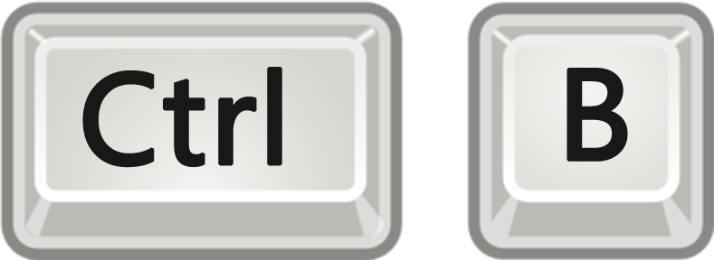
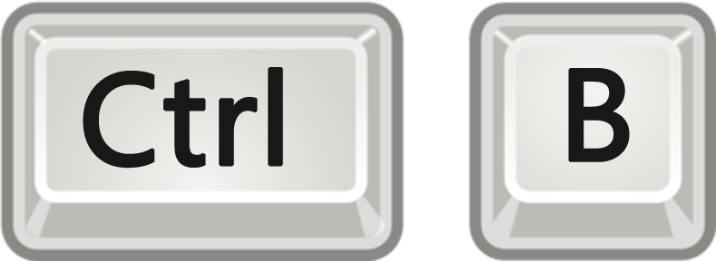

您可以在浏览器右上角点开光线书签扩展图标。单击书签按钮即可保存当前页面！
您也可以使用快捷键进行保存，默认快捷键为
注意：若快捷键无效，可能是与您已有扩展的快捷键发生了冲突。请前往：
Chrome工具栏——>工具——>扩展程序
在页面的最右下角点击<键盘快捷键>，对光线书签快捷键进行重新设置！
这是一款智能、快速的Chrome书签扩展，旨在以更优雅的方式提升您的网页浏览体验
尤其适用于阅读一些长篇的文档、文章，或是跟踪网络课程、剧集。
分秒即用
没有任何复杂且不必要的账号注册，安装即用。采用IndexedDB本地存储技术，更加轻便快捷。后期将添加Chrome账号同步功能，自动将数据通过Chrome浏览器进行同步。
记住位置
第一款能够记忆滚动条位置的书签应用。在您保存书签的同时保存您的阅读位置。下次打开书签时，自动滚动到上次阅读的位置，无需再上下翻滚寻找上次读到哪里，使您的阅读体验更加流畅。尤其适用于阅读长篇技术文档、网络小说、文章等。
同类覆盖
保存书签的同时允许创建同类列表。下次保存时，将对URL进行分析，若分析结果为同类书签，将覆盖之前保存的书签。适用于您要阅读的一份文档有多个页面，或是跟踪剧集时，每次只保留当前书签，将以前的删除。避免留存大量同类的过往书签。
该功能正在开发中...
使用说明
How-To
您可以在浏览器右上角点开光线书签扩展图标。单击书签按钮即可保存当前页面！
您也可以使用快捷键进行保存，默认快捷键为
注意：若快捷键无效，可能是与您已有扩展的快捷键发生了冲突。请前往：
Chrome工具栏——>工具——>扩展程序
在页面的最右下角点击<键盘快捷键>，对光线书签快捷键进行重新设置！
更新记录
Updates
实现基本的书签存储功能，可以记录滚动条位置，再次打开时可以恢复到记录的位置。
完成光线书签项目展示网页。
联系我
Contact
开发者：李泳 Neil
邮箱：yong.li1992@foxmail.com
社交网络：
开发这款书签的初衷，是因为我在使用Chrome自带的书签的过程中切身体会到的不方便。经常需要读一些非常长的技术文档，短时间内又读不完，保存为书签以后下次再打开的时候还要费力去找上次读到哪里，十分痛苦！而另一方面，经常跟一些网络课程之后会发现，因为每看完一节课都要保存一下书签，一段时间后就会充满了该课程之前已看过的不需要的书签，十分杂乱！尝试了许多现有的工具，都不能很好的解决。正是基于这两点，才有了开发这款书签的想法。
在您的使用过程中如果遇到任何问题，或是有功能建议，请联系我加以改进，以使得光线书签带给您更好的网络阅读体验！